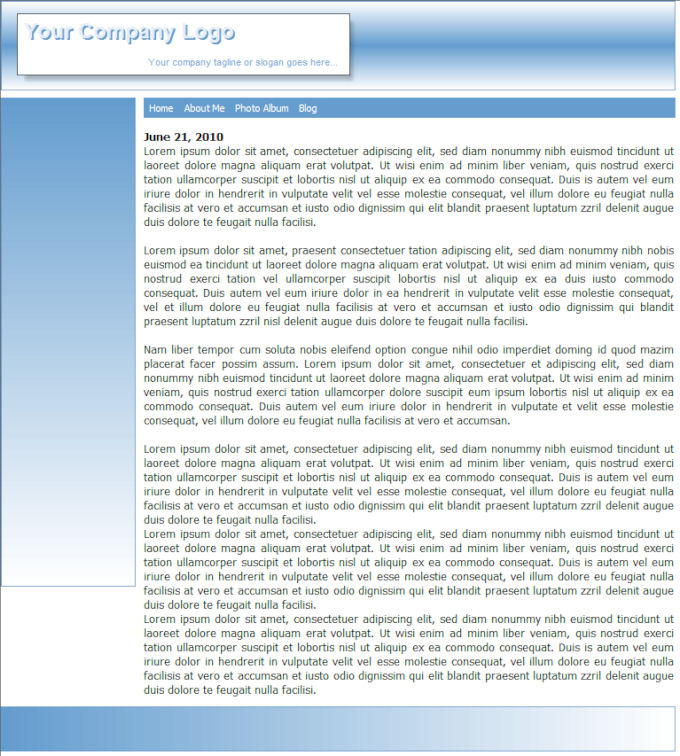

The page will have a header, menu, footer and (very important) a Content Place Holder.
To insert a Content Place Holder select Menu->Insert->Layout->Content Place Holder.
To insert a Content Place Holder select Menu->Insert->Layout->Content Place Holder.
How to use Master Frames?
A master frame can be used if the frame (header/footer) of a website needs to be the same for the whole website, while the content is different for each page. The master frame (which is just another page) will merge with the objects during publishing. The result will be one HTML page.
Master frame
This is a page that contains the layout (usually the header and footer) which is the same for all pages.
The master frame will have a 'Content Place Holder' object. During preview/publish this content place holder will be replaced by the actual content of the page.
A master frame will not be published as standalone page; it is only needed during design time. It should not be in your website's navigation/menu.
The master frame is not a container for content but actually content pages surround themselves with a master frame.
Content Pages
Content pages are basically all other pages of the website. In the page properties you configure which page must be used as the master frame.
Let’s design a website using master frames.
Step 1
We start with the master frame. Insert a new page and call it 'master_frame'.
A master frame can be used if the frame (header/footer) of a website needs to be the same for the whole website, while the content is different for each page. The master frame (which is just another page) will merge with the objects during publishing. The result will be one HTML page.
Master frame
This is a page that contains the layout (usually the header and footer) which is the same for all pages.
The master frame will have a 'Content Place Holder' object. During preview/publish this content place holder will be replaced by the actual content of the page.
A master frame will not be published as standalone page; it is only needed during design time. It should not be in your website's navigation/menu.
The master frame is not a container for content but actually content pages surround themselves with a master frame.
Content Pages
Content pages are basically all other pages of the website. In the page properties you configure which page must be used as the master frame.
Let’s design a website using master frames.
Step 1
We start with the master frame. Insert a new page and call it 'master_frame'.
You can select several 'overflow' modes. This specifies what will happen if the content of the page is larger than the size of the content placer holder.
Step 3
In Page Properties we configure which page should be used a as the Master Frame.
In Page Properties we configure which page should be used a as the Master Frame.

Step 4
Publish or Preview the page. You will notice that the content of the page is now surrounded by the master frame.
Publish or Preview the page. You will notice that the content of the page is now surrounded by the master frame.
The Align property specifies how the content of the page will be aligned inside the place holder if it's smaller than the size of the content place holder.
Step 2
Next we will create the content pages.
Content Pages do not have a header, footer or navigation because those are already part of the master frame.
Here's an example of what the page might look like.
Step 2
Next we will create the content pages.
Content Pages do not have a header, footer or navigation because those are already part of the master frame.
Here's an example of what the page might look like.
Expand
The place holder will automatically expand so that the content will fit without the need for scrollbars.
All objects below and on the right side of the place holder will be repositioned.
Hidden
Content that does fit inside the place holder will be hidden.
Scroll
Scrollbars will be added if the content does not fit inside the place holder.
The place holder will automatically expand so that the content will fit without the need for scrollbars.
All objects below and on the right side of the place holder will be repositioned.
Hidden
Content that does fit inside the place holder will be hidden.
Scroll
Scrollbars will be added if the content does not fit inside the place holder.
You can download the complete project here:
https://www.wysiwygwebbuilder.tk/support/masterframes.zip
https://www.wysiwygwebbuilder.tk/support/masterframes.zip

How to use Master Frames with Layout grids?
To use master frames in combination with Layout Grids you will need to set the Overflow property of the Content Place Holder to 'floating'. This will make the Content Place Holder (and content it will be replaced with) become part of the floating layout.
To use master frames in combination with Layout Grids you will need to set the Overflow property of the Content Place Holder to 'floating'. This will make the Content Place Holder (and content it will be replaced with) become part of the floating layout.
Important Note :
Using pages with fixed layout will not work in combination a floating Content Place Holder!
Make sure the master frame and the content pages have been designed as floating layouts. Todo so, you also must embed the content of your content pages into layout grids and/or floating layers.
Using pages with fixed layout will not work in combination a floating Content Place Holder!
Make sure the master frame and the content pages have been designed as floating layouts. Todo so, you also must embed the content of your content pages into layout grids and/or floating layers.
Demo project using master frame with layout grids (requires WWB 11.2 or newer):
https://www.wysiwygwebbuilder.tk/support/master_frame_layoutgrid.zip
Related tutorials
How to use Embedded Pages
How to use Master Pages
https://www.wysiwygwebbuilder.tk/support/master_frame_layoutgrid.zip
Related tutorials
How to use Embedded Pages
How to use Master Pages